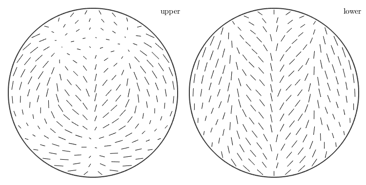
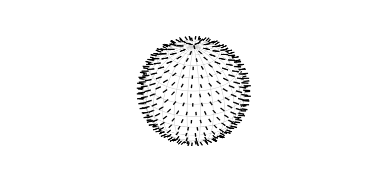

Definition via function values
At first you need some vertices
nodes = equispacedS2Grid('points', 1e5);
nodes = nodes(:);Next you define function values for the vertices
y = vector3d(sin(5*nodes.x), 1, nodes.y, 'antipodal');Now the actual command to get sAF1 of type S2AxisFieldHarmonic
sAF1 = S2AxisFieldHarmonic.approximation(nodes, y)
sAF1 = S2AxisFieldHarmonic bandwidth: 224
Definition via function handle
If you have a function handle for the function you could create a S2AxisFieldHarmonic via quadrature. At first lets define a function handle which takes vector3d as an argument and returns antipodal vector3d:
f = @(v) vector3d(v.x, v.y, 0*v.x, 'antipodal');Now you can call the quadrature command to get sAF2 of type S2AxisFieldHarmonic
sAF2 = S2AxisFieldHarmonic.quadrature(@(v) f(v))
sAF2 = S2AxisFieldHarmonic bandwidth: 128
the default plot-command
plot(sAF1);
3D plot of a sphere with the axis on itself
clf; quiver3(sAF2);
| S2AxisFieldHarmonic | a class represeneting a axis field on the sphere |
| approximation | Syntax |
| cross | syntax |
| display | standard output |
| dot | syntax |
| eval | syntax |
| plot | spherical axis field |
| quadrature | Syntax |
| quiver | spherical axis field |
| quiver3 | 3dimensional quiver spherical axis field |
| DocHelp 0.1 beta |